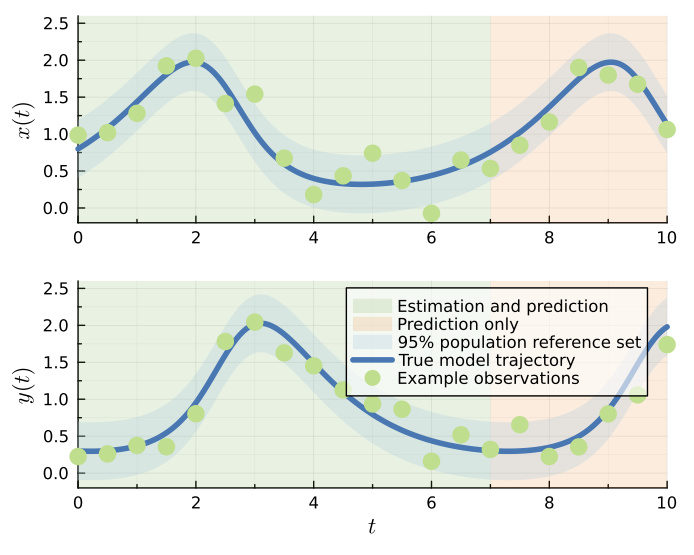

Lotka-Volterra Model
The Lotka-Volterra model with a normal data distribution [1] has the following differential equations for the population size of the prey species $x(t)$ and predator species $y(t)$:
\[ \frac{\mathrm{d}x(t)}{\mathrm{d}t} = \alpha x(t) - x(t)y(t),\]
\[ \frac{\mathrm{d}y(t)}{\mathrm{d}t} = \beta x(t)y(t) - y(t),\]
where the model parameter vector is given by $\theta^M = (\alpha, \beta, x(0), y(0))$. The corresponding additive Gaussian data distribution, with a fixed standard deviation, has a density function for the observed data given by:
\[ y_i \sim p(y_i ; \theta) \sim \mathcal{N}(z_i(\theta^M), \sigma^2 \mathbb{I}),\]
where $z_i(\theta^M)=z(t_i; \theta^M) = (x(t_i; \theta^M), y(t_i; \theta^M))$ is the model solution of the differential equations, meaning at each $t_i$ we have an observation of both $x(t)$ and $y(t)$, $y_i^\textrm{o}=(x_i^\textrm{o}, y_i^\textrm{o})$, $\mathbb{I}$ is a $2\times2$ identity matrix and $\sigma=0.2$.
The true parameter values are $\theta^M =(0.9, 1.1, 0.8, 0.3)$. The corresponding lower and upper parameter bounds are $a = (0.7, 0.7, 0.5, 0.1)$ and $b = (1.2, 1.4, 1.2, 0.5)$. Observation times are $t_{1:I} = 0,0.5,1.0,...,7$. The times considered for predictions are extended up to $t_I=10$. The original implementation can be found at https://github.com/ProfMJSimpson/Workflow. Example realisations, the true model trajectory and 95% population reference set under this parameterisation can be seen in the figure below:

Initial Setup
Here we add six worker processes, which matches the number of bivariate profiles. For coverage testing we recommend setting this number as discussed in Import Package and Set Up Distributed Environment. We're also using StaticArrays to slightly speed up the differential equation solver.
using Distributed
if nprocs()==1; addprocs(6, env=["JULIA_NUM_THREADS"=>"1"]) end
@everywhere using Random, Distributions, DifferentialEquations, StaticArrays
@everywhere using LikelihoodBasedProfileWiseAnalysis
using CombinatoricsModel and Likelihood Function Definition
@everywhere function lotka_static(C,p,t)
dC_1=p[1]*C[1] - C[1]*C[2];
dC_2=p[2]*C[1]*C[2] - C[2];
SA[dC_1, dC_2]
end
@everywhere function odesolver(t,α,β,C01,C02)
p=SA[α,β]
C0=SA[C01,C02]
tspan=(0.0,t[end])
prob=ODEProblem(lotka_static,C0,tspan,p)
sol=solve(prob, AutoTsit5(Rosenbrock23()), saveat=t);
return sol[1,:], sol[2,:]
end
@everywhere function ODEmodel(t,θ)
return odesolver(t,θ[1],θ[2],θ[3],θ[4])
end
@everywhere function loglhood(θ, data)
(y1, y2) = ODEmodel(data.t, θ)
e=loglikelihood(data.dist, data.y_obs[:, 1] .- y1)
f=loglikelihood(data.dist, data.y_obs[:, 2] .- y2)
return e+f
endInitial Data and Parameter Definition
# true parameters
α_true=0.9; β_true=1.1; x0_true=0.8; y0_true=0.3
@everywhere global σ=0.2
θ_true=[α_true, β_true, x0_true, y0_true]
t=LinRange(0,7,15)
y_true = hcat(ODEmodel(t, θ_true)...)
y_obs = [0.99 0.22; 1.02 0.26; 1.28 0.38; 1.92 0.36; 2.03 0.80; 1.41 1.78;
1.54 2.04; 0.67 1.63; 0.18 1.45; 0.44 1.13; 0.74 0.94; 0.37 0.86;
0.01 0.16; 0.65 0.52; 0.54 0.32]
# Named tuple of all data required within the log-likelihood function
data = (y_obs=y_obs, t=t, dist=Normal(0, σ))
# Bounds on model parameters
αmin, αmax = (0.7, 1.2)
βmin, βmax = (0.7, 1.4)
x0min, x0max = (0.5, 1.2)
y0min, y0max = (0.1, 0.5)
lb_original = [αmin, βmin, x0min, y0min] .* 1.0
ub_original = [αmax, βmax, x0max, y0max] .* 1.0
αmin, αmax = (0.4, 1.5)
βmin, βmax = (0.7, 1.8)
x0min, x0max = (0.4, 1.3)
y0min, y0max = (0.02, 0.8)
lb = [αmin,βmin,x0min,y0min]
ub = [αmax,βmax,x0max,y0max]
θG = θ_true
θnames = [:α, :β, :x0, :y0]
par_magnitudes = [1,1,1,1]LikelihoodModel Initialisation
opt_settings = create_OptimizationSettings(solve_kwargs=(maxtime=5,))
model = initialise_LikelihoodModel(loglhood, data, θnames, θG, lb, ub, par_magnitudes, optimizationsettings=opt_settings)Full Parameter Vector Confidence Set Evaluation
To evaluate the full parameter vector confidence set at a 95% confidence level we use:
full_likelihood_sample!(model, 500000, use_distributed=true)Profiling
Univariate Profiles
To find the confidence intervals for all three parameters at a 95% confidence level (the default), we use:
univariate_confidenceintervals!(model)Similarly, if we wish to find simultaneous 95% confidence intervals for the parameters we set the degrees of freedom parameter, dof, to the number of model parameters (instead of 1).
univariate_confidenceintervals!(model, dof=model.core.num_pars) # model.core.num_pars=4Bivariate Profiles
To evaluate the bivariate boundaries for all six bivariate parameter combinations, here we use the IterativeBoundaryMethod, which uses a 10 point ellipse approximation of the boundary as a starting guess using RadialMLEMethod. The boundaries in this example are reasonably convex, which makes this starting guess appropriate. To speed up computation we provide stronger optimization settings.
opt_settings = create_OptimizationSettings(solve_kwargs=(maxtime=5, xtol_rel=1e-12))
bivariate_confidenceprofiles!(model, 30,
method=IterativeBoundaryMethod(20, 5, 5, 0.15, 1.0, use_ellipse=true),
optimizationsettings=opt_settings)Similarly, if we wish to evaluate simultaneous 95% bivariate profiles we set the degrees of freedom parameter, dof, to the number of model parameters (instead of 2).
opt_settings = create_OptimizationSettings(solve_kwargs=(maxtime=5, xtol_rel=1e-12))
bivariate_confidenceprofiles!(model, 30,
method=IterativeBoundaryMethod(20, 5, 5, 0.15, 1.0, use_ellipse=true),
dof=model.core.num_pars,
optimizationsettings=opt_settings)Plots of Profiles
To visualise plots of these profiles we load Plots alongside a plotting backend. Here we use GR.
using Plots; gr()Univariate and bivariate profiles can either be visualised individually or in comparison to profiles at the same confidence level and degrees of freedom.
Here we plot the univariate profiles formed at a 95% confidence level and 1 degree of freedom.
plts = plot_univariate_profiles(model, confidence_level=0.95, dof=1)
plt = plot(plts..., layout=(1,4))
display(plt)Similarly, here we plot the simultaneous bivariate profiles formed at a 95% confidence level and 4 degrees of freedom.
plts = plot_bivariate_profiles(model, confidence_level=0.95, dof=model.core.num_pars)
plt = plot(plts..., layout=(2,3))
display(plt)Predictions
To make predictions for the model trajectory and the $1-\delta$ population reference set we define the following functions, which then need to be added to our LikelihoodModel. The region variable in errorfunction should be set equal to $1-\delta$ when generating predictions. These could also be added in initialise_LikelihoodModel.
@everywhere function predictfunction(θ, data, t=data.t)
y1, y2 = ODEmodel(t, θ)
y = hcat(y1,y2)
return y
end
@everywhere function errorfunction(predictions, θ, region); normal_error_σ_known(predictions, θ, region, σ) end
add_prediction_function!(model, predictfunction)
add_error_function!(model, errorfunction)To generate profile-wise predictions for each of the evaluated profiles we first define the desired time points for prediction and then evaluate the approximate model trajectory confidence sets and $(1-\delta, 1-\alpha)$ population reference tolerance sets. By default, the population reference tolerance set evaluates reference interval regions at the same level as the default confidence level ($1-\delta = 1-\alpha = 0.95$); however, this is not required. We are making predictions outside the range of the data used to evaluate the profiles.
t_pred=LinRange(0,10,201)
generate_predictions_univariate!(model, t_pred)
generate_predictions_bivariate!(model, t_pred)
generate_predictions_dim_samples!(model, t_pred) # for the full likelihood samplePlotting Predictions
We can plot the predictions of individual profiles or the union of all profiles at a given number of interest parameters, confidence level, degrees of freedom and reference interval region (if relevant). When plotting the union of these predictions we can compare it to the result of the full likelihood sample, which here used LatinHypercubeSamples, the default. Here we plot the results from simultaneous profiles.
Model Trajectory
using Plots; gr()
plot_predictions_union(model, t_pred, 1, dof=model.core.num_pars,
compare_to_full_sample_type=LatinHypercubeSamples()) # univariate profilesplot_predictions_union(model, t_pred, 2, dof=model.core.num_pars,
compare_to_full_sample_type=LatinHypercubeSamples()) # bivariate profiles$1-\delta$ Population Reference Set
using Plots; gr()
plot_realisations_union(model, t_pred, 1, dof=model.core.num_pars,
compare_to_full_sample_type=LatinHypercubeSamples()) # univariate profilesplot_realisations_union(model, t_pred, 2, dof=model.core.num_pars,
compare_to_full_sample_type=LatinHypercubeSamples()) # bivariate profilesCoverage Testing
To conduct an investigation into the coverage properties of the profiles and profile-wise predictions sets we can perform a simulation study using the provided coverage functions. The procedures are effectively identical to those used for the Logistic Model; the commentary for that example remains true for this example.
Data Generation
First we define functions and arguments which we use to simulate new training and testing data, and evaluate the true $1-\delta$ population reference set, given the true parameter values.
# DATA GENERATION FUNCTION AND ARGUMENTS
@everywhere function data_generator(θtrue, generator_args::NamedTuple)
y_obs = generator_args.y_true .+ rand(generator_args.dist, length(generator_args.t), 2)
if generator_args.is_test_set; return y_obs end
data = (y_obs=y_obs, generator_args...)
return data
end
@everywhere function reference_set_generator(θtrue, generator_args::NamedTuple, region::Float64)
lq, uq = errorfunction(generator_args.y_true, θtrue, region)
return (lq, uq)
end
training_gen_args = (y_true=y_true, t=t, dist=Normal(0, σ), is_test_set=false)
testing_gen_args = (y_true=hcat(ODEmodel(t_pred, θ_true)...), t=t_pred, dist=Normal(0, σ), is_test_set=true)Parameter Confidence Intervals
Coverage of parameter confidence intervals:
opt_settings = create_OptimizationSettings(solve_kwargs=(maxtime=5, xtol_rel=1e-12))
uni_coverage_df = check_univariate_parameter_coverage(data_generator,
training_gen_args, model, 1000, θ_true, collect(1:model.core.num_pars),
optimizationsettings=opt_settings)Bivariate Profiles
Coverage of the true value of each set of bivariate interest parameters:
opt_settings = create_OptimizationSettings(solve_kwargs=(maxtime=5, xtol_rel=1e-12))
biv_coverage_df = check_bivariate_parameter_coverage(data_generator,
training_gen_args, model, 1000, 50, θ_true,
collect(combinations(1:model.core.num_pars, 2)),
method = IterativeBoundaryMethod(20, 5, 5, 0.15, 0.1, use_ellipse=true),
optimizationsettings=opt_settings)Coverage of the true bivariate boundary. 5000 samples corresponds to around 200-400 retained points:
opt_settings = create_OptimizationSettings(solve_kwargs=(maxtime=5, xtol_rel=1e-12))
biv_boundary_coverage_df = check_bivariate_boundary_coverage(data_generator,
training_gen_args, model, 100, 30, 5000, θ_true,
collect(combinations(1:model.core.num_pars, 2));
method=IterativeBoundaryMethod(20, 5, 5, 0.15, 0.1, use_ellipse=true),
coverage_estimate_quantile_level=0.9,
optimizationsettings=opt_settings)Prediction Coverage
Model Trajectory
To test the coverage of the true model trajectory we can use check_dimensional_prediction_coverage, check_univariate_prediction_coverage and check_bivariate_prediction_coverage. Again we use the default 95% confidence level here. Given a sufficient number of sampled points we expect the model trajectory coverage from the trajectory confidence set from propagating forward the full parameter vector 95% confidence set to have 95% simultaneous coverage.
On versions of Julia earlier than 1.10, we recommend setting the kwarg, manual_GC_calls, to true in each of the coverage functions. Otherwise the garbage collector may not successfully free memory every iteration leading to out of memory errors.
opt_settings = create_OptimizationSettings(solve_kwargs=(maxtime=5, xtol_rel=1e-12))
full_trajectory_coverage_df = check_dimensional_prediction_coverage(data_generator,
training_gen_args, t_pred, model, 1000, 500000,
θ_true, [collect(1:model.core.num_pars)])
uni_trajectory_coverage_df = check_univariate_prediction_coverage(data_generator,
training_gen_args, t_pred, model, 1000,
θ_true, collect(1:model.core.num_pars),
num_points_in_interval=20,
optimizationsettings=opt_settings)
biv_trajectory_coverage_df = check_bivariate_prediction_coverage(data_generator,
training_gen_args, t_pred, model, 1000, 30, θ_true,
collect(combinations(1:model.core.num_pars, 2)),
method=IterativeBoundaryMethod(20, 5, 5, 0.15, 0.1, use_ellipse=true),
optimizationsettings=opt_settings)Repeating the coverage of univariate and bivariate profiles using the profile path approach:
uni_trajectory_coverage_df = check_univariate_prediction_coverage(data_generator,
training_gen_args, t_pred, model, 1000,
θ_true, collect(1:model.core.num_pars),
dof=model.core.num_pars,
num_points_in_interval=20,
optimizationsettings=opt_settings)
biv_trajectory_coverage_df = check_bivariate_prediction_coverage(data_generator,
training_gen_args, t_pred, model, 1000, 30, θ_true,
collect(combinations(1:model.core.num_pars, 2)),
dof=model.core.num_pars,
method=IterativeBoundaryMethod(20, 5, 5, 0.15, 0.1, use_ellipse=true),
optimizationsettings=opt_settings)$1-\delta$ Population Reference Set and Observations
To test the coverage of the $1-\delta$ population reference set as well as observations we can use check_dimensional_prediction_realisations_coverage, check_univariate_prediction_realisations_coverage and check_bivariate_prediction_realisations_coverage. Here we will only look at the coverage for simultaneous profiles.
On versions of Julia earlier than 1.10, we recommend setting the kwarg, manual_GC_calls, to true in each of the coverage functions. Otherwise the garbage collector may not successfully free memory every iteration leading to out of memory errors.
full_reference_coverage_df = check_dimensional_prediction_realisations_coverage(data_generator,
reference_set_generator, training_gen_args, testing_gen_args, t_pred, model, 1000, 500000,
θ_true, [collect(1:model.core.num_pars)])
uni_reference_coverage_df = check_univariate_prediction_realisations_coverage(data_generator,
reference_set_generator, training_gen_args, testing_gen_args, t_pred, model, 1000,
θ_true, collect(1:model.core.num_pars),
dof=model.core.num_pars,
num_points_in_interval=20,
optimizationsettings=opt_settings)
biv_reference_coverage_df = check_bivariate_prediction_realisations_coverage(data_generator,
reference_set_generator, training_gen_args, testing_gen_args, t_pred, model, 1000, 20, θ_true,
collect(combinations(1:model.core.num_pars, 2)),
dof=model.core.num_pars,
method=IterativeBoundaryMethod(20, 5, 5, 0.15, 0.1, use_ellipse=true),
optimizationsettings=opt_settings)